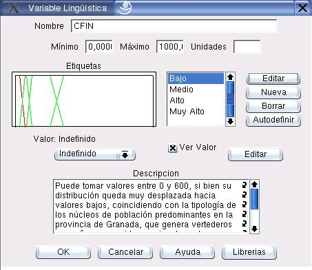

Edición de Variables Lingüísticas
El contenido semántico de cada variable lingüística se edita con el cuadro de diálogo que muestra la figura 6.1. Para acceder a él, debe seleccionarse la opción Variable del cuadro de diálogo de edición de nodos (ver sección 5)
Los principales componentes de este cuadro de diálogo se explican a continuación:
- Nombre:
- En este campo se edita el nombre de la variable lingüística, que será el mismo nombre asignado al Nodo de Cálculo.
- Mínimo/Máximo:
- En estos campos se editan los valores mínimo y máximo que puede tomar la variable.
- Unidades:
- Este campo opcional permite especificar las unidades de la variable.
- Etiquetas:
- La variable lingüística tiene un conjunto de etiquetas asociadas a ella. Cada una de ellas, a su vez, tiene un conjunto difuso asociado. En el cuadro de diálogo se dibujan los conjuntos difusos, y se listan las etiquetas. Si se selecciona una etiqueta de la lista, su conjunto difuso asociado se pinta en color rojo. Una etiqueta seleccionada se puede editar o borrar. tambien es posible crear nuevas etiquetas.
- Autodefinir:
- Esta opción permite la definición automática de etiquetas (ver sección 6.2).
- Valor:
- Cada Variable tiene definido un Valor por defecto. El usuario puede seleccionar qué tipo de valor por defecto desea definir.
- Ver Valor:
- Si se activa esta opción, se pintará en color negro el valor por defecto asignado a la variable, en el mismno dibujo en que se muestran los conjuntos difusos de las etiquetas.
- Editar Valor:
- Mediante esta opción el usuario puede editar el valor por defecto asignado (ver secciones 6.1.1, 6.1.2 y 6.1.4).
- Descripción:
- El usuario puede incluir un texto descriptivo de la Variable.
Figura 6.1:
Diálogo para edición de variables lingüísticas
|

|
Subsecciones
Oscar Duarte
2005-05-01